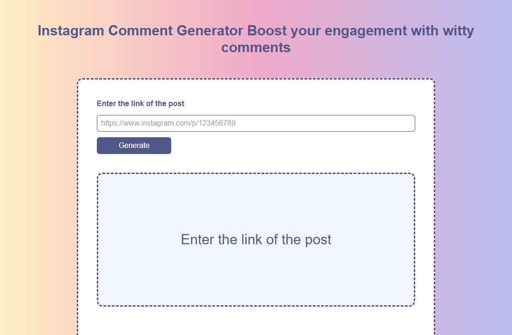
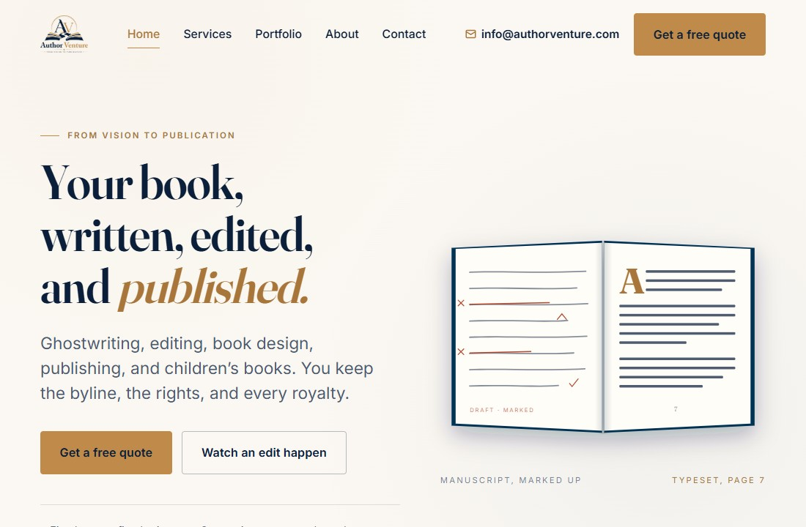
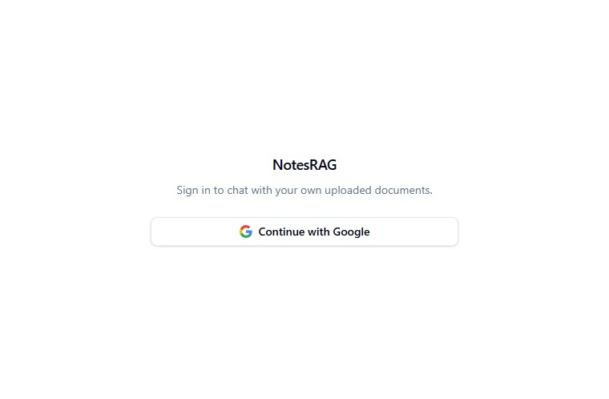

System thinking
Clear boundaries, intentional data flow, and software built to evolve.
Available for meaningful systems work
Full-Stack & Applied AI Engineer
Building AI-integrated systems, RAG pipelines, and scalable web applications.
About
I’m a systems-focused engineer working across AI, full-stack development, and cloud infrastructure. I care about the unglamorous details that make software dependable after launch.
My work spans React and Next.js interfaces, FastAPI services, retrieval-augmented generation, automation, and voice AI. The goal is always the same: turn useful ideas into production systems people can trust—not just demos that look convincing.
Clear boundaries, intentional data flow, and software built to evolve.
RAG and AI systems designed around measurable product utility.
Performance, observability, and maintainability are part of the build.
Selected work

AI-powered tool that generates contextual Instagram comments using LLMs, helping creators respond with more relevance and less friction.

A publishing and design platform for book production, cover concepts, and marketing assets—bringing creative operations into one focused workflow.

A document intelligence system for RAG-based querying and knowledge extraction, built to make dense source material searchable and useful.
Toolkit
React · Next.js · TypeScript
FastAPI · Node.js · NestJS
RAG · NLP · CV · LLM integrations
Docker · AWS · Cloudflare · Linux
Experience
Full-Stack & AI Engineer
Software Engineer
Contact
Open to conversations about AI products, intelligent automation, and systems that need to work in the real world.